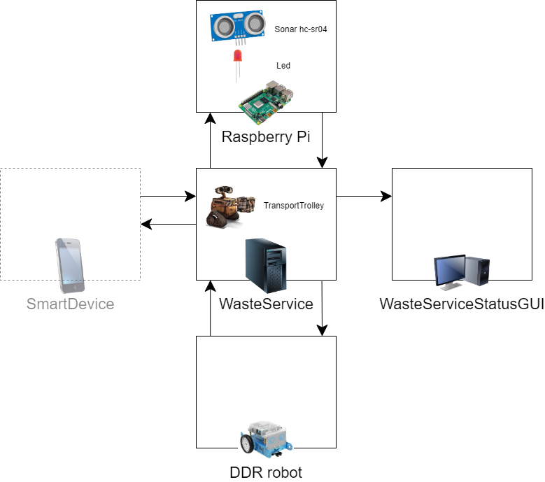
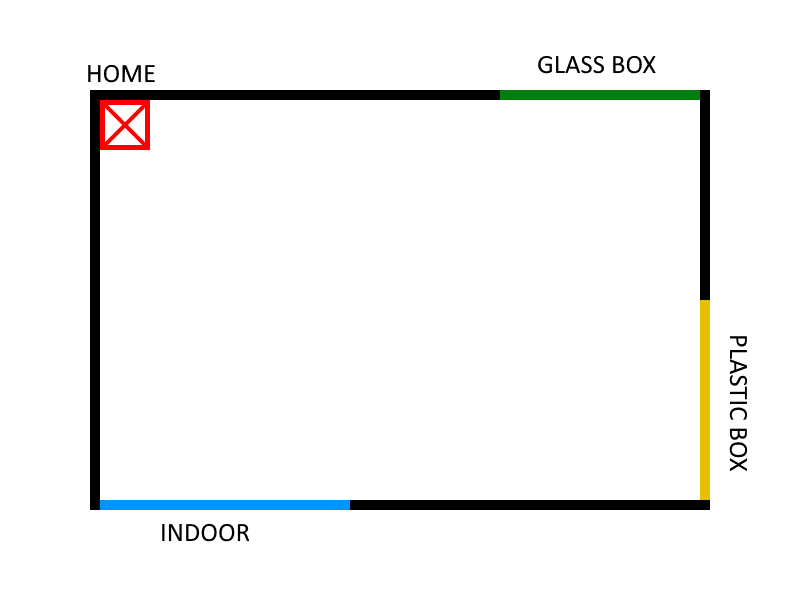

Requirement Analysis
The purpose of the final product is to manage a waste-disposal service.General Overview
Software Provided by the Customer
- BasicRobot - software component which executes movement commands of a DDR-robot "independently of the technology" with which the robot is implemented (virtual or real);
- RaspberryPi utility software -
- SmartDevice - a software already implemented and usable which allows the truck driver to send store requests.
System Abstract
From the analysis of text provided by the customer, we are able to draft one main evidence: the software system is going to comprehend at least 4 computational nodes:- WasteService node
- Smart device (waste truck) node
- Raspberry Pi (alarm-warning) node
- Monitoring node
Computational Nodes


Show the legend
Service Area
Given the description and the image provided by the customer, we've modeled the service area as a rectangle free from obstacles and surrounded by 4 walls, within which there are 4 relevant areas:- HOME, an area of the same size as the transport trolley, in which it will be placed each time the WasteService software is run;
- INDOOR, a zone along the perimeter, where the transport trolley will have to go every time the WasteService receives a StoreRequest, and from which it will pick up the waste;
- GLASSBOX and PLASTICBOX, an area along the perimeter, where the transport trolley will have to deposit the respective waste.

Requirements Formalization
Core-Business Entities
| Entity | Activity | Type | Description/Behaviour |
|---|---|---|---|
| smartDevice- Simulator |
Reactive | - | Test Entity that simulates the approaching of a waste truck at INDOOR and sends a mock store requests to the wasteService. |
| wasteService | Proactive & Reactive | Actor | Handles the store requests and manages the transport trolley with high-level abstraction actions. It contains an internal representation of the waste service area. |
| transportTrolley | Proactive & Reactive | Actor | Handles the wasteService requests and sends lower-level commands to the basicRobot. |
| Reactive | Actor | Entity that receives commands from the transportTrolley and drives the DDR robot. |
Data
| Data | Type | Description |
|---|---|---|
| WasteType | Enumerative |
Indicates the possible types of waste.
enum class WasteType { PLASTIC, GLASS }
|
| wasteLoad | Floating point variable |
Indicates the weight of waste (in KG) to deposit.
var wasteLoad : Float
|
| wasteType | Enumerative variable |
Indicates the type of waste to deposit.
var wasteType : WasteType
|
| PICKUP_TIME | Integer constant |
Time in seconds, known in advance, it takes the transport trolley to pick up the waste.
const val PICKUP_TIME : Int
|
| MAXPB | Floating point constant |
Maximum waste capacity that the PlasticBox can store.
const val MAXPB : Float
|
| MAXGB | Floating point constant |
Maximum waste capacity that the GlassBox can store.
const val MAXGB : Float
|
| RD | Integer constant |
Length of the transport trolley.
const val RD : Int
|
Messages
| Message | Type | Sender | Receiver | Description |
|---|---|---|---|---|
| storeRequest | Request | SmartDevice- Simulator |
WasteService |
Ask if truckLoadwasteType |
| loadAccepted | Reply | WasteService | truck driver (smart device) |
Positive response: there is enough space. |
| loadRejected | Reply | WasteService | truck driver (smart device) |
Negative response: there is NOT enough space. |
| moveTo | - | WasteService | TransportTrolley (smart device) |
Moves the transport trolley to location |
Models
Why QAK
Problem: we need to fill the abstraction gap related to the concept of service.Solution:
Reasons:
- It's was entirely implemented whitin our software house, which makes it easier to get information and support from the actual creator of the language.
- It provides a way to represent concepts related to services, such as request, response, dispatch, etc.; while other general-purpose languages would need external libraries (e.g. Java would need some kind of JAR to implement Actors), frameworks or resources to do the same.
- It allows you to create executable models, directly from the language, which capture the salient aspects of the requirements or problems.
- Our software house already has some project and components we could exploit and use.
QAK documentation
Logical Architecture
Model: demo_*.qak
Test Plans
Interaction: SmartDevice → WasteService
Simulation that involves the issuing of multiple storeRequest from the SmartDevice. The test aims to check how the system should behave when receiving different types of requests:- Store request of Plastic, if there is enough space (loadaccepted);
- Store request of Plastic, if there is not enough space (loadrejected);
- Store request of Glass, if there is enough space (loadaccepted);
- Store request of Glass, if there is not enough space (loadrejected);
File: Test*.java (Executable)
Results: Gradle test report (Generated automatically)